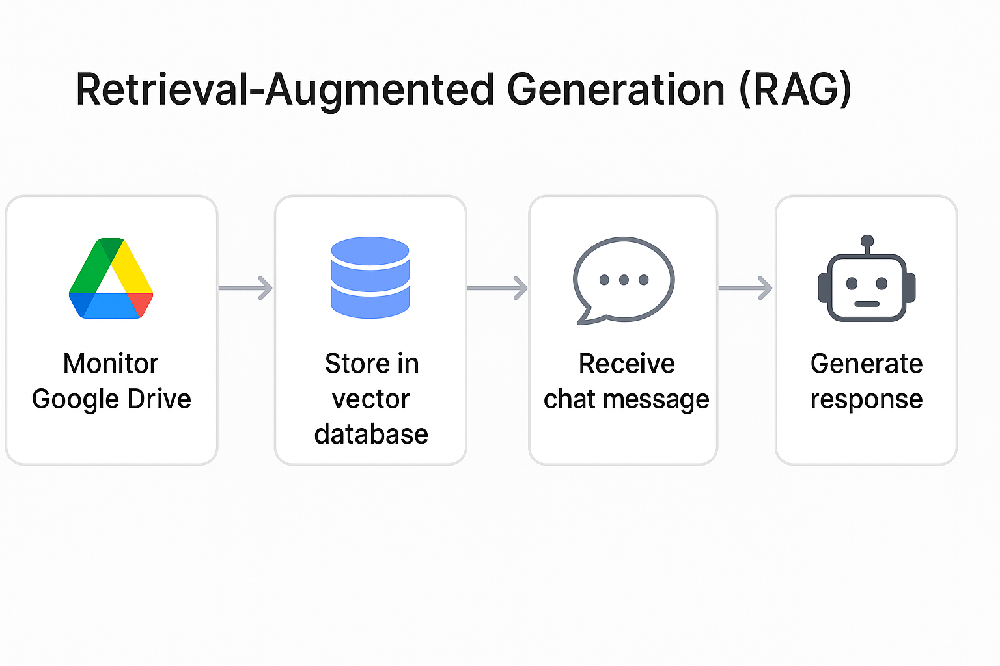
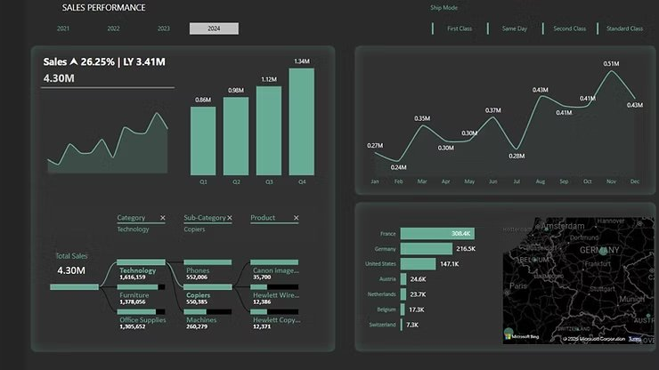

Diamond Price Prediction Project
Machine learning pipeline for diamond price prediction, comparing multiple regression models and evaluating performance through structured preprocessing and model validation.
Machine learning pipeline for diamond price prediction, comparing multiple regression models and evaluating performance through structured preprocessing and model validation.
n8n automation that scans Google Sheets for pending topics, performs AI-powered web research with Tavily, generates LinkedIn posts via OpenAI, and writes results back to the sheet.

A fully automated Retrieval-Augmented Generation (RAG) workflow that transforms documents uploaded to Google Drive into a smart chatbot capable of answering questions based on their content.

This SQL automation project implements a structured data cleaning pipeline to prepare U.S. household income data for reliable analytics.

In this SQL-based exploratory data analysis (EDA), we analyze the world_life_expectancy dataset to investigate how health and economic factors relate to life expectancy across countries and years.

The objective of this dashboard is to provide a holistic view of the retail market dynamics through the analysis of comprehensive sales data..

This Python project implements an automated password generator that creates secure, customizable passwords based on user-defined criteria.

This project analyzes a structured PostgreSQL job postings database to uncover high-paying remote Data Analyst opportunities and the skills that drive top compensation.